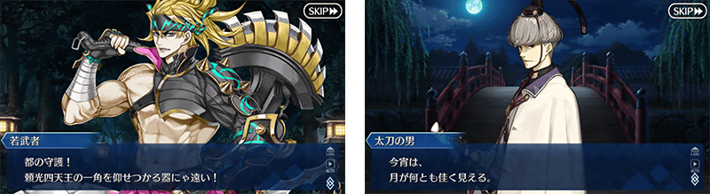
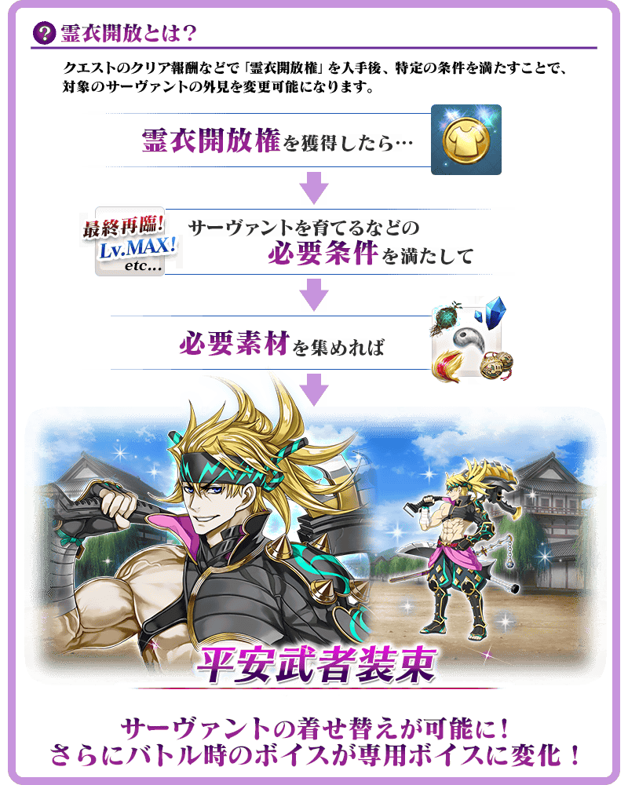
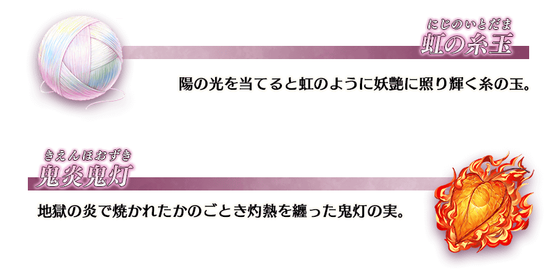
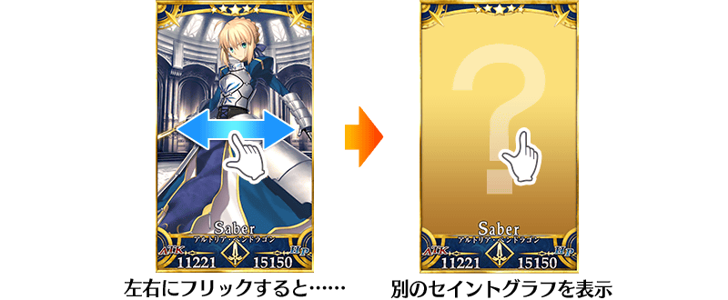
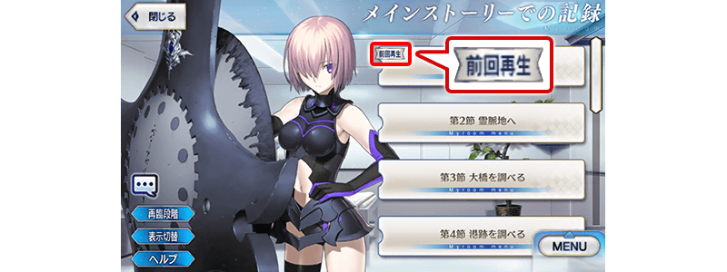
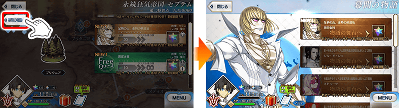

※12月4日(五) 17:00圖片修正

◆第2部 第5.5章「地獄界曼荼羅 平安京 轟雷一閃」開幕◆
「地獄界曼荼羅 平安京 轟雷一閃」的舞台是平安時代的京都。
敬請期待在千年之都面對陰謀捲起的迦勒底御主新故事！
※本頁面皆為開發中圖片。會有與實際圖片相異的情況。
◆公開時間◆
2020年12月4日(五) 17:00～
◆開放條件◆
通過第2部 第5章「Lostbelt No.5 星間都市山脈 奧林帕斯 擊落神之日」後開放。
※不需要通過亞種特異點(從Ⅰ到Ⅳ)。
※在文字冒險部份包含第1.5部「亞種特異點Ⅲ 屍山血河舞台 下總國 英靈剣豪七番勝負」的一部份內容。
注意
第2部 第5.5章的開放不需要通過亞種特異點(從Ⅰ到Ⅳ)，但第2部 第5.5章的物語包含有關亞種特異點Ⅲ的內容劇透一部份。關於尚未通過亞種特異點Ⅲ的遊玩玩家，敬請見諒包含一部份劇透。


由於在「Fate/Grand Order 迦勒底放送局 Vol.15 第2部 第5.5章 轟雷一閃 配信＆劇場版卡美洛前編公開 前夕SP」達成7萬轉推，實施放送記念登入獎勵！
在下述期間中登入的話，贈送聖晶石12個。
◆領取期間◆
2020年12月3日(四) 3:00～12月10日(四) 2:59
上述期間中，在初次登入「Fate/Grand Order」的時間點，贈予至禮物箱。
※期間內未登入的話無法領取。
※禮物只能領取1次。
◆贈送內容◆
聖晶石12個
◆贈送對象◆
2020年12月3日(四) 2:59前通過「特異點F 炎上汙染都市 冬木」的御主對象
※上述時間前，在管理室(ターミナル)畫面的關卡橫幅必須要有「CLEAR」的文字顯示。
【12月4日(五) 17:00追記】
在「Fate/Grand Order」官方網站內首頁及Gallery，公開了第2部 第5.5章「地獄界曼荼羅 平安京 轟雷一閃」的電視廣告。
敬請確認。
※2020年12月4日(五) 17:00～12月16日(三) 11:59的期間中，在最初啟動程式時會播放「地獄界曼荼羅 平安京 轟雷一閃」的廣告影片。
※期間中，「地獄界曼荼羅 平安京 轟雷一閃」的廣告影片會登錄到個人空間(マイルーム)的圖鑑(マテリアル)，在期間結束後刪除。
動畫製作：A-1 Pictures
「★5(SSR)坂田金時(Berserker)」的新靈衣登場！
想開放「★5(SSR)坂田金時(Berserker)」的靈衣「平安武者裝束」的話，除了靈衣開放權外再加上必須滿足一些開放條件。
◆開放時間◆
2020年12月4日(五) 17:00～
◆有關靈衣開放權的注意◆
※「★5(SSR)坂田金時(Berserker)」的靈衣一部份語音會隨著外觀變化。
※請注意未持有「★5(SSR)坂田金時(Berserker)」的情況，可入手靈衣開放權。但無法進行靈衣開放。


「靈衣開放」是自強化畫面進行。
※「靈衣開放」後會自動切換戰鬥角色和圖示。若想回到「靈衣開放」前的狀態和變成其他再臨階段的情況，可自從者詳細畫面變更。 ※進行「靈衣開放」不會讓職階和能力等有所變化。
介紹開放靈衣「平安武者裝束」的「★5(SSR)坂田金時(Berserker)」寶具演出！
在「Fate/Grand Order」官方網站內的公告中，以影片公開寶具演出，敬請確認。
配合「地獄界曼荼羅 平安京 轟雷一閃」的公開，開放御主等級的上限。
透過本次的開放，最大等級從150變更至160。
◆開放時間◆
2020年12月4日(五) 17:00～
【12月4日(五) 17:00追記】
自「地獄界曼荼羅 平安京 轟雷一閃」追加2種新道具！
為新登場從者的技能強化及靈基再臨必要的道具。
主要能從於「地獄界曼荼羅 平安京 轟雷一閃」主線關卡出現的敵人做為戰利品獲得。

【12月4日(五) 17:00追記】
在2020年12月4日(五)的維修後反映的更新內容之中，介紹代表性的內容。
◆追加時間◆
2020年12月4日(五) 17:00～
卡面擴大顯示時修改成可直接確認別的卡面
從者詳細畫面中從卡面擴大顯示的狀態，變得可直接左右滑動確認前後的卡面，另外，就算再臨階段隨機設定ON的情況變得也可確認不同的卡面。
因此，確認各個再臨階段的擴大顯示卡面，變得比目前為止還要少的操作。

圖鑑(マテリアル)中在最後播放的記錄修改成會顯示「上次播放(前回再生)」記號
在圖鑑(マテリアル)，在之前前夕播放的記錄修改成會顯示「上次播放(前回再生)」的記號。

從幕間物語畫面移動至物語的舞台時，修改成能快速返回幕間物語畫面的UI
在從幕間物語畫面移動至物語的舞台時，想返回原本畫面需要好幾次的操作，修改成顯示「至幕間物語」鍵，可直接返回到幕間物語畫面。

【12月4日(五) 17:00追記】
其他還有
・「地獄界曼荼羅 平安京 轟雷一閃」開幕前夕宣傳活動
・「地獄界曼荼羅 平安京 轟雷一閃」開幕前夕Pick Up召喚(每日交替)
以期間限定舉辦中！
關於詳情，請自下述橫幅確認。
■「平安京Pick Up召喚」詳細情報

■「地獄界曼荼羅 平安京 轟雷一閃」開幕前夕Pick Up召喚(每日交替)詳細情報